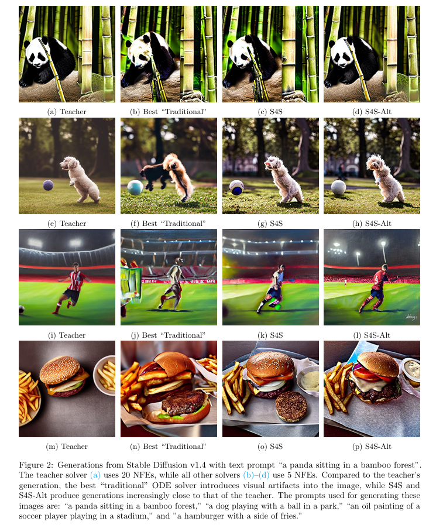

全文翻译
摘要
扩散模型（DMs）通过从随机噪声开始并迭代求解反向时间常微分方程（ODE）来从数据分布中创建样本。由于迭代求解的每个步骤都需要进行计算成本高昂的神经函数评估（NFE），因此人们对仅使用几次NFE来近似求解这些扩散ODE（且不修改基础模型）产生了浓厚兴趣。然而，我们观察到在少量NFE的情况下，使用传统的ODE求解器从根本上无法追踪真实的ODE演化。在这项工作中，我们提出了一种新方法，用于学习DM的优秀求解器，我们称之为“求解器求解”（S4S）。S4S通过学习匹配强大教师求解器的输出来直接优化求解器，以获得良好的生成质量。我们在六种不同的预训练DM上评估了S4S，包括用于条件和无条件采样的像素空间和潜空间DM。在所有设置中，相对于传统的ODE求解器，S4S一致地提高了样本质量。此外，我们的方法是轻量级的、无数据的，并且可以作为黑盒插入任何离散化调度或架构之上以提升性能。在此基础上，我们还提出了S4S-Alt，它同时优化求解器和离散化调度。通过利用DM求解器的完整设计空间，在5次NFE的情况下，我们在CIFAR10上实现了3.73的FID，在MS-COCO上实现了13.26的FID，这比之前无训练的ODE方法提升了1.5倍。
1 引言
扩散模型（DMs）（Ho等人，2020；Sohl-Dickstein等人，2015；Song等人，2021b）是一类强大的模型，它革新了生成式建模，并在众多领域中取得了最先进的性能。概括地说，DMs学习一个分数网络，用于近似扩散过程的时间相关分数函数（Chen等人，2023；Song等人，2021b）。从DMs中采样通常涉及求解一个称为扩散ODE的常微分方程，其动力学由分数网络决定（Song等人，2021a,b）。数值求解此ODE通常需要大量的神经函数评估（NFE），因此计算过程可能相当缓慢且繁琐（Ho等人，2020；Karras等人，2022）。这与DMs的许多令人兴奋的应用直接矛盾，因为这些应用需要低延迟推理，例如机器人技术（Chi等人，2024）或游戏引擎（Valevski等人，2024）。因此，人们对如何在不牺牲性能的情况下减少所需的NFE数量产生了极大兴趣。
使DMs能够使用更少NFE的方法通常分为两类：学习一个全新的模型，将多次分数网络评估提炼为单个步骤（基于训练），或在保持分数网络不变的情况下设计高效的扩散ODE采样器（无训练）。从实际角度来看，基于训练的方法（如渐进式提炼（Meng等人，2023；Salimans和Ho，2022）和一致性模型（Song等人，2023））需要访问原始数据样本和大量计算资源，而这些资源可能不可用或不可行。此外，基于训练的方法通常优化的目标会从根本上改变模型作为分数函数的解释，使其不适用于依赖基于分数建模的任务，如引导生成（Ho和Salimans）、合成（Du等人，2023）和逆问题求解（Xu等人，2024）。
出于这些原因，我们专注于无训练方法，该方法需要选择扩散ODE的离散化，并确定最佳的评估时间步和合成策略，以准确近似连续轨迹。大多数文献都集中在小NFE情况下选择良好的时间步调度，即选择在何处分配我们的NFE预算（Chen等人，2024；Sabour等人，2024；Tong等人，2024；Watson等人，2021；Xue等人，2024）。然而，在实践中，选择一个好的求解器同样重要——这大致对应于选择如何合成这些不同的函数评估。大多数工作仍然依赖“教科书”式的ODE求解器，如单步（SS）（Lu等人，2022a,b）或线性多步（LMS）方法（Lu等人，2022b；Zhang和Chen，2023）。尽管有一些文献探索了超越这些求解器的方法（Zhang等人，2024；Zheng等人，2023；Zhou等人，2024），但这些方法只探索了采样器设计空间的狭窄部分。
现成的求解器（以及大多数优化采样器的前期工作）的核心是试图在离散时间中近似真实ODE的路径，这在给定足够精细的离散化（即大量NFE）时可以实现。这些方法经过精心设计，使得每个步骤都能在小时间窗口内对ODE解产生准确的低阶泰勒近似。我们的关键观察是，在低NFE情况下，这是错误的目标，因为在步长极大的情况下，低阶近似等解析工具根本没有意义。
我们建议放弃这种形式主义，而是直接优化求解器以提高扩散模型的性能。Shaul等人（2024b）独立地做出了类似的观察；然而，除其他问题外，他们推导的方法试图完全概括所有先前已知的求解器。结果，他们的求解器包含了大量不相关的信息，并优化了一个非常复杂的目标，因此在许多情况下无法匹配最先进的性能。相比之下，我们提供了一种更简洁、更直接的方法来获得优化的求解器，并证明我们的方法在几乎所有测试的设置中都一致地提高了传统求解器的性能。
1.1 我们的研究成果
我们引入了S4S方法，该方法通过从教师网络的样本中进行知识蒸馏来学习求解器，从而在无需访问原始训练数据的情况下增强现有求解器的性能。在此基础上，S4S-Alt通过交替优化方法实现了更高的图像质量，该方法同时优化时间离散化和求解器系数。
1.1.1 求解器求解（S4S）
我们的首要贡献是一种在低NFE场景下为扩散模型寻找数值求解器的新方法。我们没有使用任何固定的现有方法，而是采用了为扩散模型学习优秀求解器的思路，并将这一方法命名为“求解器求解”（Solving For the Solver，S4S）。关键在于，我们寻求的是能够很好地近似整体扩散过程的求解器，而非尝试对任何ODE进行离散化。实际上，正如我们在附录4.2中所展示的，任何试图维持“标准”不变量（这些不变量可保证传统求解器跟踪连续时间ODE轨迹）的尝试都会对性能产生负面影响。这进一步证实了我们的直觉：为了获得最佳结果，必须打破这种标准方法。
更详细地说，S4S使用一种蒸馏式目标来学习求解器系数。在此过程中，一个采用小步长（因此需要大量NFE）的基础“教师”ODE求解器提供能产生高质量样本的轨迹。相应地，一个具有可学习系数的“学生”求解器在给定相同噪声潜变量的情况下，学习以更少的步骤生成等效图像。我们将在3.1节详细解释我们的方法。我们的方法具有以下优势：
- 普适性性能提升：在实验中，我们证明了在所有尝试的场景中，与之前最先进的求解器相比，我们的方法普遍提升了所实现的FID（弗雷歇初始距离）。
- 即插即用的黑盒改进：相关地，我们的方法可以轻松地以黑盒方式插入任何离散化调度和任何架构之上。值得注意的是，优化求解器所获得的增益与优化其他方面（如即使使用精心优化的离散化调度）所获得的增益是正交的——例如，即便已有一个经过精心优化的离散化调度，插入S4S仍会显著提升FID。因此，我们的方法为任何从业者提供了一种简单的方式，可立即提升其生成模型的性能。
- 轻量级且无数据依赖：我们的方法是轻量级的，计算开销极小，与优化求解器其他方面的替代方法相当（且通常更低），在单个A100上通常耗时少于1小时。此外，我们的方法完全无数据依赖，因此不会给用户带来额外的统计成本。
1.1.2 完整采样器求解：S4S-Alt
尽管S4S本身已在各方面带来了普遍且显著的改进，但我们发现，当S4S与选择良好离散化的方法有效结合时，其强大之处才真正得以显现。通过这种方式，我们能够充分利用ODE采样器的设计空间——这在以往文献中似乎尚未得到充分探索——找到求解器系数和离散化步骤的最佳组合，如图1所示。我们提出了一种基于交替最小化的方法，该方法迭代地更新系数或离散化调度，一次更新一个。我们将这种方法称为S4S-Alt。
| ** |
尽管S4S已超越了先前的基线，但通过使用S4S-Alt同时优化离散化调度和求解器，我们能够在整体上显著超越现有方法，在FID方面通常提升1.5-2倍或更多（例如，参见表3和附录中的表格）；对样本的定性检验（如图2和附录H.4所示）也印证了这一点。例如，仅使用5次NFE，我们在AFHQ-v2上实现了3.89的FID分数，在CIFAR-10上为3.73，在FFHQ上为6.25，在类条件ImageNet上为4.39，在使用Stable Diffusion v1.4的MS-COCO上为13.26。值得注意的是，这些数值远优于仅优化离散化调度或仅优化S4S所取得的结果。
|  |
|---|
| ** |
| ** |
2 背景与相关工作
我们回顾了扩散模型和ODE、扩散ODE求解器以及基于学习的采样器的背景知识。我们还在附录A中提供了与现有方法的详细对比。
2.1 背景：扩散模型
设$x_{0} \in \mathbb{R}^{d}$为来自未知数据分布$p_{0}(x_{0})$的随机变量。扩散模型（DMs）（Ho等人，2020；Song等人，2021b）定义了一个正向过程${x_{t}}_{t \in[0, T]}$，该过程从$x_{0}$开始，逐步添加高斯噪声，以收敛到边缘分布$p_{T}(x_{T})$，该分布在时间$T$时近似为各向同性高斯分布，即$p_{T}(x_{T}) \approx \mathcal{N}(x_{T} ; 0, \tilde{\sigma}^{2} I)$，其中$\tilde{\sigma} > 0$。给定$x_{0}$，我们可以通过转移核$p_{0 t}(x_{t} | x_{0}) = \mathcal{N}(x_{t} ; \alpha_{t} x_{0}, \sigma_{t}^{2} I)$来描述添加高斯噪声的过程，其中对于所有$t \in[0, T]$，$\alpha_{t}$、$\sigma_{t} > 0$的选择使得信噪比（SNR）$\alpha_{t}^{2} / \sigma_{t}^{2}$随$t$的增加而衰减。值得注意的是，Song等人（2021b）证明了该正向过程与概率流ODE具有相同的边缘分布$p_{t}$，概率流ODE是一个从$x_{T} \sim p_{T}(x_{T})$开始的反向时间ODE，其表达式为：
其中$f(t) = d\log\alpha_{t} / dt$，$g(t) = (d\sigma_{t}^{2} / dt) - 2(d\log\alpha_{t} / dt)\sigma_{t}^{2}$（Kingma等人，2021）。由于式（1）中的分数函数$\nabla_{x}\log p_{t}(x_{t})$是未知的，DMs使用噪声预测神经网络来学习它，以最小化：
其中$x_{0} \sim p(x_{0})$，$\epsilon \sim \mathcal{N}(0, I)$，$t \sim U[0, T]$，$w(t)$是时间相关的加权函数，$x_{t} = \alpha_{t}x_{0} + \sigma_{t}\epsilon$是时间$t$处的噪声样本（Ho等人，2020；Lu等人，2022a）。通过Tweedie公式，$\epsilon_{\theta}(x_{t}, t)$学习近似$-\sigma_{t}\nabla_{x}\log p_{t}(x)$，从而定义了扩散ODE：
其初始条件为$x_{T} \sim p_{T}(x_{T})$。为了在给定初始值$x_{s}$（其中$t < s$）的情况下精确求解$x_{t}$处的扩散ODE，Lu等人（2022a）根据对数信噪比$\lambda_{t} := \log(\alpha_{t} / \sigma_{t})$对式（2）进行了重新参数化，得到：
其中$\hat{x}_{\lambda}$和$\epsilon_{\theta}(\hat{x}_{\lambda}, \lambda)$表示$x_{t}$和$\epsilon_{\theta}(x_{t}, t)$在$\lambda$域中的重新参数化形式。
2.2 背景：求解扩散ODE
从DM中采样需要对式（2）中的扩散ODE进行数值求解。给定从$t_{0} = T$到$t_{N} = 0$的$N$个离散化步骤的递减序列$\{t_{i}\}_{i=0}^{N}$，我们从$\tilde{x}_{t_{0}} = x_{T} \sim \mathcal{N}(x_{T} ; 0, \tilde{\sigma}^{2} I)$开始，迭代计算估计序列$\{\tilde{x}_{t_{i}}\}_{i=0}^{N}$，使得$\overline{x}_{t_{N}}$与真实解$x_{t_{N}}$之间的全局截断误差较低。控制该误差的标准方法是在每个$t_{i}$处约束$\overline{x}_{t_{i}}$与$x_{t_{i}}$之间的局部截断误差。由于式（3）给出了给定初始值$\tilde{x}_{t_{i-1}}$时扩散ODE的精确解，因此对积分的准确近似反过来为时间$t_{i-1}$处的真实解提供了准确的近似$\overline{x}_{t_{i}}$。可以对式（3）中的$\hat{\epsilon}_{\theta}(\hat{x}_{\lambda}, \lambda)$在$\lambda_{t_{i-1}}$处进行泰勒展开，得到：
其中$\psi_{n}(h)$取决于$n$、$\lambda_{t_{i}}$和$\lambda_{t_{i-1}}$；更多细节见附录B.1。计算这种$k$阶近似需要准确估计直到$n = k-1$阶的导数$\hat{\epsilon}_{\theta}^{(n)}$。现有方法采用ODE文献中的两种主要方法：单步方法（Karras等人，2022；Lu等人，2022a,b；Zhang和Chen，2023；Zhao等人，2023；Zheng等人，2023），它在$(t_{i}, t_{i-1})$内使用$k-1$个中间点；以及线性多步方法（Liu等人，2022；Lu等人，2022b；Zhang和Chen，2023；Zhao等人，2023；Zheng等人，2023），它使用来自$k-1$个先前步骤的信息。对于低阶方法（$k \leq 4$），在适当的正则条件下（见附录B.2），且当$h_{\text{max}} := \max_{1 \leq i \leq N}h_{i}$受限于$O(1/N)$时，这些方法实现了$O(h_{i}^{k+1})$的局部截断误差，因此全局误差为$O(h_{\text{max}}^{k})$。
当NFE的数量很大且因此$h_{\text{max}}$很小时，局部截断误差控制会产生高质量的样本（Lu等人，2022a,b；Zhang和Chen，2023）。然而，当NFE很少且$h_{\text{max}}$很大时，高阶泰勒误差占主导地位，导致较大的全局误差。相比之下，我们在式（6）中的方法直接最小化全局误差。
2.3 相关工作：基于学习的采样器
实际上，没有任何一对ODE求解器和时间离散化能够在各种数据集和模型架构上普遍生成高质量的样本，例如附录H.3和Tong等人（2024）。这激发了基于学习的方法来推导适应当前任务和架构的ODE求解器和时间离散化。我们在此进行简要概述，并在附录A中详细讨论。一种流行的方法专门学习离散化步骤（Chen等人，2024；Sabour等人，2024；Tong等人，2024；Watson等人，2021；Xue等人，2024）。我们的S4S方法学习求解器系数，补充了此类方法的增益，并在所有场景中普遍提升了性能，如表2和附录H.3中全面所示。另一类研究专注于仅优化求解器系数（Zhang等人，2024；Zheng等人，2023），或联合优化求解器系数和时间离散化（Liu等人，2023；Shaul等人，2024a；Zheng等人，2023；Zhou等人，2024）。然而，这些方法旨在通过与式（4）相同的方法或通过紧密匹配教师求解器的整个轨迹来最小化局部近似误差。相反，通过如式（6）中通过匹配教师轨迹的终点来最小化全局误差，S4S显著超越了这些方法。与我们的方法最接近的是BNS（Shaul等人，2024b），它学习求解器系数和时间离散化以最小化全局误差。我们在表4中提供了比较，并在附录A.3中解释了我们相对于BNS的改进。
| ** |
3 学习扩散模型采样器
我们详细阐述了使用少量NFE生成高质量样本的DM采样器创建策略。通过学习采样器的系数和离散化步骤，我们充分利用了扩散模型求解器的设计空间，因为这两者必然相互影响。我们首先通过为三种通用类型的扩散ODE求解器（单步（SS）、线性多步（LMS）和预测校正方法（PC））提供通用公式来描述这个设计空间。然后描述我们为直接控制全局误差而最小化的目标。接下来，给定一组预先指定的离散化步骤，我们介绍仅学习求解器系数的算法；与手工设计的求解器相比，在相同NFE数量下，该算法普遍提升了性能。最后，我们描述同时学习求解器系数和离散化步骤的方法。
3.1 S4S：学习求解器系数
对于已学习的分数网络和初始噪声潜变量$x_{T} \sim \mathcal{N}(0, \tilde{\sigma}^{2}I)$，可以使用预先确定的离散化步骤序列$\{t_{i}\}_{i=0}^{N}$和由其系数$\phi$及其使用的步数$k$决定的ODE求解器$\Psi$从扩散ODE中采样。对于SS和LMS求解器，我们将下一步的估计写为：
其中$\Delta_{i}(\phi)$表示作为系数$\phi$函数的求解器增量。我们在表1中明确定义了$\Delta_{i}(\phi)$。PC求解器进一步优化此初始预测，通过使用新系数再次应用式（5）。我们在附录B.1中提供了此公式的原理，并在附录C中提供了数据预测模型的等效示例。为了表示已学习的求解器使用$k$步信息，我们不严格地将其称为$k$阶。
| ** |
我们在算法1中提出“求解器求解”（S4S）来学习这些系数，以适应给定分数网络的问题实例。考虑来自准确求解扩散ODE的“教师”求解器$\Psi^{\ast}(x_{T})$的输出。我们的目标是最小化从$t_{0}=T$到$t_{N}=0$顺序应用$\Psi_{\phi}$生成的样本$\Psi_{\phi}(x_{T})$与教师样本之间的全局误差：
其中$d(\cdot, \cdot)$是适当的距离函数，它是可微的、非负的且自反的。目前，$\{t_{i}\}_{i=0}^{N}$是预先确定的离散化调度，尽管我们也在3.2节中提出学习离散化。我们强调针对全局误差学习求解器的重要性：尽管一些现有工作尝试匹配教师求解器的轨迹，但许多教师轨迹包含病理特征，这些特征随后会被蒸馏到学生求解器中；更多讨论见附录B.3。虽然如上所述的此方法已现成地提升了性能，但我们现在详细说明进一步提升性能的两项优化。

3.1.1 时间相关系数
求解ODE的经典方法（如Adams-Bashforth或Runge-Kutta）通常由一组常数系数定义，无论它们在ODE的哪个时间步进行估计。尽管这并非对扩散ODE求解器普遍适用，但许多求解器在求解反向过程的步骤中保持系数固定；见附录C.2。这未能完全捕捉扩散ODE的复杂性：随着边缘分布$p_{t}(x_{t})$与高斯噪声的相似度越来越低，分数网络的预测误差逐渐增大，而在噪声时间步发生的估计误差与在“更干净”步骤发生的估计误差在估计轨迹中的传播方式不同。因此，作为额外优化，S4S学习时间相关系数，如表1中对当前迭代$i$的依赖所示。我们在附录H.2中对使用时间相关系数的设计决策进行了消融实验；时间相关系数显著优于使用固定系数。
3.1.2 松弛目标
对于每个学生求解器$\Psi_{\phi}$，NFE数量和可学习参数数量由求解器类型、离散化步骤数量和求解器的步参数$k$决定，如表1所示。因此，当目标求解器使用较少NFE时，可学习参数数量可能非常少，例如当$N=k=3$时，LMS仅有6个参数。这可能使优化式（6）变得困难：实际上，给定初始条件$x_{T}$，我们的目标是确保$\Psi_{\phi}(x_{T}) = \Psi^{*}(x_{T})$。然而，由于可学习参数数量少，学生求解器几乎总是产生具有显著截断误差的输出。因此，尽管我们学习的系数可能成功降低全局误差，但它们可能仍然无法拟合目标，无法充分实现预期的性能提升。
相反，类似于Tong等人（2024），我们提出目标函数的松弛版本，在参数数量有限时更易优化。具体而言，我们不强制学生求解器精确重现教师对$x_{T}$的输出，而是仅要求存在一个足够接近$x_{T}$的输入$x_{T}’$（即在有界半径内），使得$\Psi_{\phi}(x_{T}’) = \Psi^{\ast}(x_{T}) $。因此，只要$x_{T}’$适当接近$x_{T}$，已学习学生模型的平均全局误差仍可很低，同时减轻目标的难度。具体而言，我们的松弛目标表示为：
其中$B_{r}(x) := \{x’ \mid |x - x’|_{2} \leq r \tilde{\sigma}\}$是关于$x$的半径为$r \bar{\sigma}$的$L_{2}$球。该目标具有几个吸引人的性质。首先，在附录D.2中，我们通过实验验证，类似于Tong等人（2024），此目标比我们的原始目标更易求解，当$r=0$时可恢复原始目标。此外，在求解器的适当假设下，我们可以确保已学习求解器生成的分布$p_{\phi}(x_{0})$与教师求解器的分布$p^{*}(x_{0})$足够接近；详细信息见附录D.1。最后，尽管我们在训练期间最小化此目标，但在推理时，我们仅使用初始条件$x_{T} \sim p_{T}(x_{T})$，而不是寻找并使用$x_{T}’ \sim B_{r}(x_{T})$作为初始条件。
3.2 S4S-Alt：系数和时间步
尽管仅学习求解器系数可提升样本质量，但离散化步骤的选择对于实现最佳性能仍然至关重要。就此，我们提出S4S-Alt，它通过对系数或离散化步骤的目标进行交替最小化，同时学习求解器系数和离散化步骤。
3.2.1 离散化步骤参数化
从DM采样时，离散化步骤的选择决定了：（1）估计样本中预期的信噪量；（2）分数网络预测中的误差；（3）使用估计轨迹点作为分数网络输入所传播的误差量。在对一组已学习的离散化步骤进行参数化时，我们考虑了这些影响，将已学习的步骤分为两部分。首先，我们使用一组由可学习向量$\xi \in \mathbb{R}^{N+1}$参数化的时间步$\{t_{i}^{\xi}\}_{i=0}^{N+1}$，用于确定步长和SNR参数，从而解决（1）。我们明确将$t_{i}^{\xi}$参数化为0到$T$之间的单调递减参数序列，即$t_{0}^{\xi}=T > t_{1}^{\xi} > \cdots > t_{N}^{\xi}=0$，此参数化的显式描述见附录E.1。其次，我们使用一组修改后的时间步作为分数网络的输入，以缓解（2）和（3）。具体而言，我们使用一组解耦步骤$\{t_{i}^{c} = t_{i}^{\xi} + \xi_{i}^{c}\}_{i=0}^{N}$作为分数网络的输入，其中$\xi^{c} \in \mathbb{R}^{N+1}$；$\xi^{c}$的构造见附录E.2。在此参数化下，式（5）和表1中$k$步LMS的更新步骤为：
其中$h_{i} = t_{i}^{\xi} - t_{i-1}^{\xi}$。为简便起见，我们将可学习时间参数的集合表示为$\Xi := \{\xi, \xi^{c}\}$。因此，我们将具有可学习系数和时间步的求解器表示为$\Psi_{\phi, \Xi}$，其输出表示为$\Psi_{\phi, \Xi}(x_{T})$。
3.2.2 交替优化
接下来考虑如何同时优化求解器和离散化调度。我们提出迭代方法S4S-Alt，它在优化时间步和求解器系数之间交替进行。形式上，在迭代$k$时，我们求解目标：
在第一个目标中，我们使用系数和时间步初始化为$\phi_{k-1}$和$\Xi_{k-1}$的学生求解器，使用LD3目标（Tong等人，2024）仅学习$\Xi_{k}$。在第二个目标中，我们从初始化为新学习的时间步$\Xi_{k-1}$和系数$\phi_{k-1}$的求解器中学习$\phi_{k}$。
此方法的自然替代方案是同时优化系数和时间步。然而，在实验中，我们发现同时优化两者存在几个挑战，即由于求解器系数和时间步之间的相互作用，优化 landscape 变得更加复杂。此外，我们发现联合学习两者有更大的过拟合风险。实际上，S4S-Alt的表现明显更好，如表6所示。
3.3 实现细节
下面讨论S4S的实际细节。为便于表示，我们首先以仅学习系数的S4S版本为基础进行解释，然后讨论S4S-Alt的特定细节。有关超参数等的明确询问，请参见附录G.2。
实际目标 尽管在式（7）中制定了松弛目标，但实际优化仍不明确。为此，我们将优化问题视为同时优化$\phi$和$x_{T}’$，使用投影SGD来强制$x_{T}’$保持接近$x_{T}$。具体而言：
在实践中，我们使用LPIPS作为距离度量，这是基于蒸馏方法的常用损失（Salimans和Ho，2022；Song等人，2023）；对于其他模态，应使用适当的替代距离度量。我们在4.2节中对使用LPIPS的决策进行了消融实验。
算法细节 S4S学习系数的算法如算法1所示。首先，从用于从教师求解器$\Psi^{\ast}(x_{T})$创建样本的噪声潜变量序列中收集数据集。最初，学生和教师求解器使用相同的初始条件，即$x_{T}’ = x_{T}$。在每次迭代中，对于给定批次，计算已学习求解器$\Psi_{\phi}(x_{T}’)$与$\Psi^{\ast}(x_{T})$输出之间的损失，并使用反向传播获取此损失关于$\phi$和$x_{T}’$的梯度。为强制$x_{T}’$的约束，我们使用投影SGD确保其保持在$B_{r}(x_{T})$内；对于系数，我们可以使用任意梯度应用方法，尽管经验上基于动量的方法效果最佳。值得注意的是，更新$x_{T}’$后，我们将其与原始$(x_{T}, \Psi^{*}(x_{T}))$对保留，并使用新的噪声潜变量更新数据集。我们还优化了梯度计算图的计算；更多细节见附录F.2。
初始化 一个需要考虑的自然问题是学生ODE求解器系数的初始化方式。由于我们的方法通常包含常见的扩散ODE求解器，包括性能最佳的方法如DPM-Solver++（Lu等人，2022b）、iPNDM（Zhang和Chen，2023）和UniPC（Zhao等人，2023），我们可以使用这些方法的相同系数初始化$\phi$。这可解释为将这些经典求解器之一封装在我们的轻量级方法中；在仅学习系数的情况下，我们将此称为如iPNDM-S4S。或者，可考虑根据高斯分布初始化系数。我们在附录H.2.1中对此决策进行了消融实验，发现求解器初始化优于高斯初始化。
学习系数和时间步的算法 实际上，当为学生求解器$\Psi_{\phi, \Xi}$同时学习时间步和求解器系数时，S4S优化式（9）的等效交替版本（对于联合学习系数同样如此）；其伪代码非常相似，我们在附录F.1中详细说明。然而，实际上，学习$\Psi_{\phi, \Xi}$通常需要比仅学习系数更大的数据集，这主要归因于参数数量更多。我们在附录H.2.3中对数据集大小的性能进行了消融实验。
4 实验
我们在多个在常见图像数据集上训练的预训练扩散模型上评估了S4S。我们使用了针对CIFAR-10（32×32）、FFHQ（64×64）和AFHQv2（64×64）的像素空间扩散模型，每个模型都具有EDM风格的主干（Karras等人，2022）。我们还使用了潜在扩散模型，包括LSUN-Bedroom（256×256）和类条件ImageNet（256×256），指导尺度为2.0。最后，我们针对512×512像素的Stable Diffusion v1.4，在各种指导尺度下呈现了定性和定量结果。我们在附录G中为所有实验集提供了精确的实验细节，包括教师求解器的选择、数据集大小以及噪声半径r的选择。我们在所有数据集上使用Frechet Inception Distance分数（FID）作为图像质量指标，对Stable Diffusion使用从MS-COCO字幕生成的30k样本，对所有其他数据集使用50k样本。
首先，我们展示了S4S作为可学习三阶多步版本的最佳当前ODE求解器（UniPC（Zhao等人，2023）和iPNDM（Zhang和Chen，2023））的独立封装器的优势。在这里，我们在优化松弛目标之前，将学生求解器初始化为与未学习的对应求解器具有相同的系数。在可能的情况下，我们还与DPM-Solver-v3（Zheng等人，2023）进行了比较，该求解器学习系数，但仅为了获得局部截断误差的保证。我们在七种离散化调度方法上评估了我们的学习求解器，范围从常见启发式方法到现代步长选择方法，更多细节见附录G.1。我们还描述了S4S在可学习单步方法上的性能，可在附录H.1中找到。
接下来，我们针对几种学习采样器属性的方法评估了S4S-Alt，包括AMEDPlugin（Zhou等人，2024）和BNS（Shaul等人，2024b），在样本质量和计算效率方面。我们将S4S-Alt实例化为使用iPNDM系数和LD3离散化初始化的LMS方法；相对于SS和PC方法，这由于参数较少而限制了对训练数据的过拟合量。最后，我们在4.2节中对S4S中的关键设计决策进行了消融。
4.1 主要结果
当用作学习求解器系数的封装器时，S4S几乎在少NFE regime中跨数据集、求解器类型和离散化方法普遍提高了图像生成质量。我们的完整结果可在附录H.3中找到，而我们在表2中呈现了CIFAR-10和ImageNet上的结果选择。我们观察到，S4S提供的改进大小取决于基础离散化调度和求解器类型，并且虽然S4S对于任何离散化调度总是提高性能，但改进量因调度的不同选择而异。例如，当使用已优化以最小化全局误差的LD3离散化调度时，来自S4S的FID相对增益小于使用启发式离散化调度（如Time EDM或Time Uniform）时，如表2所示。此外，我们通过对学习系数进行PCA来可视化S4S学习的系数动态，如图3所示。我们发现，学习的系数可以与iPNDM的系数非平凡地不同，并且随时间显示出独特的动态；然而，不同训练运行之间的差异相对较小。
| ** |
| ** |
当我们同时优化求解器和调度时，即使用S4S-Alt，我们获得了相对于先前最先进技术的显著更大改进。我们在表3中展示了一些这些结果，其中我们与学习采样器单一维度的方法进行了比较：使用学习的LD3离散化调度的最佳“传统”ODE求解器、跨所有调度的最佳DPM-Solver-v3，以及跨所有调度的最佳S4S求解器；完整的FID值集见附录H.3。相对于简单的学习方法，S4S-Alt实现了极强的性能。我们还在附录H.4中提供了定性比较。最后，我们在表4中提供了S4S-Alt与学习求解器方面的方法以及基于训练的蒸馏方法的详细比较。S4S-Alt超越了绝大多数可学习求解器方法，并以一小部分计算量实现了与基于训练方法的竞争性能。
4.2 消融实验
求解器阶数对生成质量的影响。表5显示了对学习的LMS模型中求解器阶数的消融。在两种版本的S4S中，过大的阶数往往会降低性能，尽管将r与更多参数成比例设置，使用来自遥远时间步的信息会损害输出样本质量。此外，使用更多参数会增加对从教师模型采样的数据过拟合的风险。因此，我们发现在S4S中为学生采样器使用相对较低的阶数（即3）是明智的。
| ** |
交替最小化的重要性。我们还描述了S4S-Alt的交替最小化目标的重要性。作为替代方案，我们考虑使用相同目标同时学习求解器系数和离散化步骤；见附录H.2.2中此“联合”目标的显式描述，其类似于式（9）。我们在表6中呈现了我们的结果。我们发现，使用联合学习求解器系数和离散化步骤的目标提供的样本质量低于交替学习它们。这与我们的直觉一致，因为求解器系数和它们使用的时间步之间的相互作用可能导致在联合学习所有参数时出现复杂的优化landscape。
| ** |
在单步求解器中强制一致性。尽管通常我们放弃在扩散求解器中维持局部误差控制的概念，但我们考虑了一项额外消融，用于在单步求解器中强制一致性，这是确保收敛的必要条件。即，我们消融了要求单步求解器中的$b_{j,i}$对每个i求和为1。我们在表7中展示了这些结果——一致性并未导致更好的全局误差，实际上反而恶化了我们的全局误差性能。
| ** |
5 结论
我们引入了S4S（求解器求解），这是一种学习DM求解器的新方法，其动机在于标准ODE求解器专为大NFE场景设计，而在我们关注的少NFE场景中，教师模型与学生模型之间的差异会急剧扩大。我们的方法通过直接匹配教师求解器的输出来进行优化，可补充用户选择的任何离散化调度，并且具有轻量级和无数据依赖的特点。我们证明了S4S在六种不同的预训练DM上一致提升了样本质量，包括用于条件和无条件采样的像素空间和潜空间DM。
在S4S的基础上，我们进一步引入了S4S-Alt，它通过交替优化求解器系数（使用S4S）和时间离散化调度，充分利用了DM求解器的完整设计空间。在5次NFE的情况下，我们在CIFAR10上实现了3.73的FID，在MS-COCO上实现了13.26的FID，相比之前的无训练ODE方法提升了1.5倍。
尽管我们取得了改进，但仍存在局限性和未来工作的方向：1）我们仅在ODE求解器上进行了实验，为SDE求解器设计等效方法仍是一个开放问题；2）优化的系数选择依赖于NFE的数量，无法在改变NFE数量时重复使用；3）我们学习的是数据集级别的系数，而非样本级别的系数。我们还注意到，我们的实验比较是公平的，因为我们对比的是无数据依赖的最先进方法（即无法访问教师模型的原始训练数据）。然而，存在需要原始训练数据的基于训练的最先进方法（如Lee等人，2024），其性能优于包括我们在内的任何无数据依赖方法。
A 与现有工作的比较
在此，我们详细讨论与我们方法相似的工作，强调现有方法的局限性，并说明我们的方法如何对其进行改进。
A.1 上界：与AYS和DMN的比较
首先，我们讨论我们与Align Your Steps（AYS）（Sabour等人，2024）和DMN（Xue等人，2024）的关系，这两种方法通过最小化各种形式的误差上界来学习扩散模型的优化离散化调度；然而，最小化这些上界并不能保证实际最小化真实的全局误差。此外，由于这些方法仅专注于选择离散化调度，它们未能充分探索DM采样器的完整设计空间。
DMN 在DMN中，Xue等人（2024）仅通过优化离散化调度来最小化全局误差的上界，而不考虑ODE求解器方法或神经网络的影响；该上界仅由控制SNR的$\sigma_{t}$和$\alpha_{t}$的调度构建。此外，它做了一个强假设，即分数网络的预测误差均匀地被一个小常数所界定，而这在实践中往往不成立（Zhang和Chen，2023）。
AYS 在AYS中，Sabour等人（2024）构建了真实扩散SDE解分布与观察到的采样分布之间的KL散度上界。他们通过昂贵的蒙特卡罗过程来最小化该上界，并需要定制的数值解（如早停和大批次大小）以确保稳定优化。更一般地说，这两种方法都针对其特定的误差概念优化上界，这无法保证实际全局误差的最小化。
A.2 局部截断误差：与DPM-Solver-v3、GITS、AMEDPlugin、ΠA和Bespoke Solvers的比较
在此，我们讨论多种通过最小化各种形式的局部截断误差来学习离散化调度（Chen等人，2024）、求解器系数（Zhang等人，2024；Zheng等人，2023）或两者结合（Shaul等人，2024a；Zhou等人，2024）的工作。如前所述，我们强调这种优化模式不足以确保全局误差的最小化，以及方法特定的差异或缺陷。
DPM-Solver-v3 DPM-Solver-v3（Zheng等人，2023）源自一系列卓越的基于指数积分器的工作（Lu等人，2022a；Zheng等人，2023）。值得注意的是，DPM-Solver-v3计算经验模型统计量（EMS），这些统计量定义了系数，以最小化其求解器公式的泰勒展开产生的一阶离散化误差。有趣的是，尽管这些方法仅最小化一阶误差，它们也被用于DPM-Solver-v3的高阶版本。然而，关键在于，EMS的计算是为了确保局部截断误差控制，并最终在给定k阶预测器和最大步长h的情况下，提供$O(h^{k})$形式的全局误差控制。因此，当步长变大时，DPM-Solver-v3与其他旨在控制局部截断误差的传统求解器一样，存在相同的缺陷。此外，Zheng等人（2023）仅学习求解器系数，忽略了采样器设计空间的一半。
GITS 类似地，GITS（Chen等人，2024）是一种使用基于DP的搜索来选择和优化DM离散化步骤序列的方法，旨在最小化学生采样器的局部截断误差。然而，如2.2节所讨论的，最小化局部截断误差并不能保证全局误差的边界，尤其是在少NFE场景中；他们的算法也反映了这一点，因为它假设局部截断误差的缩放以获得全局误差的估计。此外，他们选择离散化步骤的方法与学生采样器使用的特定ODE求解器无关。
AMED-Plugin AMED-Plugin（Zhou等人，2024）是最近提出的一种方法，通过在现有求解器的离散化调度内选择中间时间步，并在ODE求解器中使用中间点时应用学习的缩放因子，来学习现有求解器的系数和时间步；他们通过在从UNet风格分数网络提取的瓶颈特征之上学习额外的“设计器”神经网络来实现这一点。对AMED-Plugin的合理解释是，它学习了可用于许多常见求解器的采样过程中使用的一半时间步；因此，它没有充分利用采样器设计空间，例如选择所有求解器系数和时间步。此外，AMED-Plugin中使用的神经网络还被训练为通过匹配教师轨迹的中间点来最小化截断误差，导致与2.2节中相同的局限性。它还需要更长的训练时间，这可能归因于所学习的参数数量更多。
ΠA ΠA（Zhang等人，2024）是一种通过最小化学生轨迹的均方误差来学习不同传统求解器的特定求解器系数的方法，需要相对最小的优化成本。与早期批评类似，匹配教师轨迹仍然会在学生求解器中学习教师轨迹的缺陷，这些缺陷在教师使用更多NFE时会被纠正，但不适合学生求解器。此外，这种方法仅学习系数，未能利用完整的设计空间；因此，其定量性能不如S4S。
Bespoke Solvers Bespoke solver（Shaul等人，2024a）是一种求解器蒸馏方法，通过构建和最小化全局误差的上界来有效地学习时间步和系数；实际上，该上界本质上导致最小化来自教师求解器的局部截断误差之和。因此，尽管它利用了完整的采样器设计空间，但它也寻求最小化次优目标。
A.3 最小化全局误差：与BNS和LD3的比较
最后，我们讨论两种寻求直接最小化全局误差的方法，要么通过学习离散化步骤（Tong等人，2024），要么通过学习时间步和求解器系数（Shaul等人，2024b）。尽管这两种目标与我们的方法一致，但它们在特定方面未能实现最佳性能。
BNS Bespoke Non-stationary Solvers（BNS）（Shaul等人，2024b）直接最小化全局误差，在这种情况下为PSNR，仅基于学生和教师DM采样器的输出。尽管这与我们的方法一致，但它们有三个关键限制。首先，它们的求解器本质上是线性多步方法的学习版本，具有最大阶数；即，它们允许扩散模型的最早预测即使在非常晚的时间步也作为梯度信息。本质上，这些求解器是利用完整轨迹信息的N步方法。过去的工作（Zheng等人，2023）和我们自己的消融实验表明，尝试使用受过去步骤影响过大的方法会导致ODE轨迹的不稳定性。其次，在少NFE场景中，BNS的参数数量仍然相对较少，这使得其目标难以优化，并导致求解器可能欠拟合；我们通过松弛目标纠正了这些问题。第三，BNS同时优化所有参数，无论学生模型是否充分参数化，这都会导致复杂的优化场景。相比之下，我们的方法使用交替最小化来提高整体优化的稳定性，并迭代解决具有更简单损失景观的优化问题。
LD3 LD3（Tong等人，2024）使用基于梯度的方法来学习最小化全局误差的离散化调度。此外，它们还利用松弛目标，当使用相对较少的参数时，这使得优化问题更容易。然而，LD3同样未能利用DM采样器设计空间的另一半，这导致性能的显著提升。
B ODE求解器中的局部误差控制
为完整起见，我们提供传统ODE求解器方法的截断误差控制细节；更多细节可在Lu等人（2022a）中找到。
B.1 泰勒级数推导
在此，我们简要提供泰勒级数及其低阶导数项的推导细节，如2.2节所述。有关扩散ODE求解器与低阶泰勒近似关系的更多详细信息和最具参考价值的描述，请参见Lu等人（2022a,b）；我们的解释本质上源自他们的分析。回想一下，扩散ODE在其λ参数化下的精确解可表示为：
其中$\hat{x}_{\lambda}$和$\hat{\epsilon}_{\theta}(\hat{x}_{\lambda}, \lambda)$表示$x_{t}$和$\epsilon_{\theta}(x_{t}, t)$在λ域中的重新参数化形式。为了计算$x_{t_{i}}$，我们必须近似式（10）中的积分；为此，考虑$\hat{\epsilon}_{\theta}(\hat{x}_{\lambda}, \lambda)$的泰勒展开：
此外，定义函数：
这些是指数积分器方法中的常见项（Hochbruck和Ostermann，2010）。注意，我们有$\varphi_{k}(0) = 1/k!$，且递推关系为$\varphi_{k+1}(k) = (\varphi_{k}(z) - \varphi_{k}(0))/z$。将泰勒展开式代入式（10）并定义$h := \lambda_{t_{i}} - \lambda_{t_{i-1}}$，得到：
取$\psi_{n}(h) = h^{n+1}\varphi_{n+1}(h)$，得到式（4）中的表达式。此外，注意：
因此我们提取出$e^{h} - 1$，得到：
其中$c(h)$捕获每个$\hat{\epsilon}_{\theta}^{(n)}$的相应系数。这本质上包含了我们提供的期望公式：给定的ODE求解器方法近似$\hat{\epsilon}_{\theta}^{(n)}$项，我们使用$\Delta_{i}$捕获此近似，并忽略高阶泰勒项。
B.2 局部截断误差控制的正则条件
通常，在常见的扩散ODE求解器中，需要三个正则条件（Lu等人，2022a,b；Zheng等人，2023）来确保局部截断误差可被界定：
- 式（4）中的导数$\hat{\epsilon}_{\theta}^{(n)}$对所有$0 \leq n \leq k$存在且连续。
- 分数网络$\epsilon_{\theta}$在其第一个参数$x$上是Lipschitz的。
- 最大步长$h_{\text{max}} = O(1/N)$，其中$N$是离散化步骤的数量。
这些假设在以下方面不成立：
- 噪声预测模型的导数$\hat{\epsilon}_{\theta}^{(n)}$不能保证存在或连续，因为使用标准优化器（如SGD或Adam）训练的神经网络不会对学习函数施加平滑约束。尽管谱归一化（Miyato等人，2018）等技术有助于控制Lipschitz常数，但它们不能保证可微性。
- $\epsilon_{\theta}$的Lipschitz条件在实践中通常被违反，因为现代分数网络使用如U-Net等架构，其Lipschitz常数可能非常大。即使使用归一化技术，这些常数通常也会随网络深度和宽度而不利地缩放。
- 步长限制$h_{\text{max}} = O(1/N)$迫使在计算成本和数值精度之间进行权衡，这在轨迹中ODE表现良好的许多区域可能过于保守。
这些理论限制有助于解释为什么实际实现常常偏离理想化分析。特别是，局部截断误差控制的替代方法（Chen等人，2024；Zhang和Chen，2023）可以实现良好的经验性能，尽管违反了这些假设，这表明在实践中较弱的条件可能就足够了。
B.3 局部误差控制
许多相关工作（Chen等人，2024；Shaul等人，2024a；Zhang等人，2024）建议匹配教师求解器的轨迹。在我们的设置中，给定来自教师求解器的中间点$\tilde{x}_{i}^{*}$，这将需要优化以下形式的目标：
对于$[N]$中的所有$i$，可以同时或迭代地对每个$i$进行优化。然而，在许多教师轨迹中，许多求解器具有病理行为，这些行为在NFE数量大的regime中会被纠正。例如，Zhou等人（2025）的图9展示了这样一个例子：随着指导尺度的增加，教师轨迹变得越来越病态，但受益于早期步骤中错误的纠正。然而，通过训练少NFE的学生求解器在与教师求解器的重叠点上匹配此类轨迹，它可能会学习这些相同的病理特征，而这些特征在教师求解器中通过更多NFE得以解决。
C 扩散ODE求解器的广义公式
C.1 数据预测求解器实例
尽管在正文里我们主要从噪声预测的角度关注ODE求解器的广义版本，但我们也提供了一个基于数据预测模型的通用表达式。请注意，在数据预测模型参数化下，扩散ODE精确解的一般形式为：
因此，我们只需要像在附录B.1中那样对积分进行泰勒近似，这就得到了扩散ODE的一般表达式：
我们在表8中给出了$\Delta_i^x(\phi)$的等效定义。
 |
|---|
| ** |
C.2 扩散ODE求解器中的常数系数
扩散模型求解器中的系数并非“天生”就是常数；它们是否为常数取决于离散化调度的选择和求解器的设计决策。例如，iPNDM求解器（Zhang和Chen，2023）清楚地展示了这一原则——在初始的预热期之后，它会稳定下来，在后续步骤中使用常数系数。这种设计选择在保证数值稳定性的同时提供了计算效率。该求解器通过精心设计，从预热阶段的可变系数过渡到固定值，这些固定值在剩余的时间步骤中都能很好地工作。
同样，DPM-Solver++（Lu等人，2022b）的多步方法也可以从常数系数的角度来看，尤其是在其高阶变体中。这种观点有助于解释它们的计算效率，因为不需要在每个步骤重新计算系数，同时在求解扩散ODE时仍能保持高阶精度。
D 松弛目标
D.1 理论保证
在此，我们简要重述式（7）中提出的松弛目标的理论保证；该保证由Tong等人（2024）提供。
定理D.1。设Ψ_和Ψϕ分别为教师和学生ODE求解器，二者的噪声分布均为$N(0, \sigma_1^2 I) \in \mathbb{R}^d$，对应的分布分别为q和$p_ϕ$。假设Ψ_和Ψϕ均为可逆的。设$r > 0$，若式（7）中的目标对于r存在最优解$ϕ^_$，且目标值为o，则我们有：
其中$C(\Psi_{ϕ^_}(x)) = \log |\text{det} J_{\Psi_{ϕ^_}}(\Psi_{ϕ^*}^{-1}(x))|$。
下面我们提供该证明的简要概述；更多细节见Tong等人（2024）的[A.1]部分。
证明。假设求解器可逆，且式（7）的损失存在最优解（损失为零且满足所有$r\sigma_T$-球约束）$ϕ^_$，则对于每个$x \sim q(x)$，存在唯一的b使得$\Psi__^{-1}(x) = b$，且存在唯一对应的a使得$\Psi_{ϕ^_}^{-1}(x) = a$。此外，由于a是最优解（因而是可行解），我们有$a \in B(b, r\sigma_T)$，因此$|a - b|_2 \leq r\sigma_T$。利用正态分布的密度函数，我们可以写出：
正态分布项可显式写出：
我们将$a_i = b_i + \epsilon_i$，其中$\epsilon_i \in \mathbb{R}$，则：
由于$|a - b|_2 \leq r\sigma_T$，我们有$\sum_{i=1}^d (a_i - b_i)^2 \leq r^2 \sigma_T^2$，且$a_i = b_i + \epsilon_i$，故$\sum_{i=1}^d \epsilon_i^2 \leq r^2 \sigma_T^2$。
因此：
最后一个等式由多元分布中随机变量的独立性得出。应用柯西-施瓦茨不等式：
由于$b_i \stackrel{i.i.d.}{\sim} \mathcal{N}(0, \sigma_T^2)$，平方和服从缩放为$\sigma_T^2$的卡方分布：
这使我们可以写出：
应用Gautschi不等式：
这给出：
综合所有项，我们得到最终的界：
其中$C(\Psi_{ϕ^_}(x)) = \log |\text{det} J_{\Psi_{ϕ^_}}(\Psi_{ϕ^_}^{-1}(x))|$。
证毕
在实践中，评估求解器是否可逆难以刻画。然而，我们注意到，LMS求解器至少可以表示为矩阵形式，因为它们对模型的先前评估进行线性组合。因此，如果仅学习系数，则可以通过变换$A \mapsto A + \epsilon I$（其中$|\epsilon|$为足够小的非零值）使LMS求解器可逆。
D.2 更易优化的目标
我们还希望验证松弛目标确实更易优化。我们在CIFAR-10上进行了实验：使用logSNR离散化初始化iPNDM的S4S系数，并随着r的增加刻画式（7）的经验损失。我们在图4中肯定地验证了这一点。
| ** |
松弛目标
随着r的增大，目标变得更易优化，从而验证了松弛目标在使学习求解器系数的优化问题更易处理方面的效用。
E 求解器离散化步骤的参数化
我们分两个阶段对时间步的两种版本$t_{i}^{\xi}$和$t_{i}^{c}$进行参数化，具体如下。
E.1 通用时间步
给定可学习向量$\xi \in \mathbb{R}^{N+1}$，我们通过两阶段过程构造每个时间步$t_{i}^{\xi}$。首先，应用累积softmax操作以确保严格单调性：
然后应用线性重缩放，将这些值映射到区间$[t_{\text{min}}, T]$：
这种构造确保了$t_{0}^{\xi}=T > t_{1}^{\xi} > \cdots > t_{N}^{\xi}=t_{\text{min}}$，并为确定步长和信噪比参数提供了基础，如正文所述。
E.2 解耦时间步
在参数化$\{t_{i}^{\xi}\}_{i=0}^{N+1}$之后，我们构造用作分数网络输入的解耦时间步$\{t_{i}^{c}\}_{i=0}^{N}$。具体来说，每个解耦时间步$t_{i}^{c}$定义为：
其中$\xi^{c} \in \mathbb{R}^{N+1}$是可学习的偏移向量。为保证数值稳定性，我们对解耦偏移$\xi^{c}$的幅度进行约束。令$\Delta t_{i} = |t_{i+1}^{\xi} - t_{i}^{\xi}|$为连续时间步之间的间隔，定义最大允许偏移为$\delta = \alpha \min_{i} \Delta t_{i}$，其中$\alpha > 0$是超参数。最终的解耦时间步为：
其中$\text{clip}(x, [a, b])$将$x$的值钳制在区间$[a, b]$内。这确保了端点保持固定，而中间步骤只能偏移最小步长的一小部分。
F 额外实现细节
F.1 S4S-Alt的伪代码
在此，我们描述S4S-Alt的伪代码，其与S4S的伪代码高度相似。然而，我们强调，在两个优化目标中，我们使用相同的r值来限制允许的初始噪声条件偏差。这是因为两个目标必须共享相同的噪声允许分布；否则，在整体优化的不同部分从不同的初始条件开始会使学习有效参数变得更加困难。此外，与S4S相比，使用S4S-Alt通常需要显著更多的示例，因为我们希望确保两组参数都不会开始过拟合。
F.2 高效计算技术
为了在训练期间优化内存使用，我们在计算∇ϕΨϕ(xT ′)时采用梯度重计算技术。与存储所有中间神经网络激活（这将导致与参数数量成O(N)的内存开销）不同，我们在反向传播期间动态重新计算它们。这种方法遵循Tong等人（2024）和Watson等人（2021）的思路，用增加的计算时间换取减少的内存需求。具体来说，我们重计算预训练分数网络ϵθ的调用，同时在内存中维护去噪状态的链，使我们的方法能够扩展到大型扩散架构，同时保持合理的批量大小。
G 实验细节
G.1 离散化启发式方法和方法
我们使用四种时间离散化启发式方法和三种自适应选择离散化步骤的方法。在这里，我们考虑从T到ϵ的时间间隔，其中使用N+1个总时间步长来求解ODE；在这里，将ODE求解到ϵ而不是0有助于数值稳定性。
G.1.1 离散化启发式方法
时间均匀和时间二次离散化 在时间均匀离散化调度中，我们将区间[T, ϵ]均匀分割；这给出离散化调度：
对于n ∈ [N]。或者，时间二次调度将每个时间步分配为：
这些调度在方差保持型DM中很流行（Ho等人，2020；Lu等人，2022a；Song等人，2021a）。
时间EDM离散化 Karras等人（2022）提出了到κ_t = σ_t/α_t的变量变换，并根据以下方式创建离散化调度：
其中t_κ是t ↦ κ_t的逆，由于σ_t、α_t的构造，κ_t是严格单调的，因此逆存在。
时间log-SNR离散化 或者，Lu等人（2022a,b）提出了到λ_t = log(α_t/σ_t)的log-SNR域的变量变换，并在区间上均匀离散化，即：
其中t_λ是t ↦ λ_t的逆映射，由于严格单调性，逆同样存在。
G.1.2 离散化调度选择方法
DMN DMN（Xue等人，2024）构建了一个优化问题，该问题创建了全局误差的上界。具体来说，他们根据拉格朗日近似顺序地求解扩散ODE，在分数网络预测误差均匀上界为常数的假设下构建误差的上界，并选择一组λ_i来最小化导出的上界。
GITS GITS（Chen等人，2024）是一种使用基于DP的搜索来选择DM的优化离散化步骤序列的方法，以最小化扩散ODE的偏差。他们通过计算从当前步骤t_{i-1}估计下一个时间步t_i时在可能的时间步的精细离散化搜索空间上产生的局部误差来实现这一点。一旦计算出所有成对成本的成本矩阵，他们就使用DP算法来选择给定NFE数量的最低成本步骤序列。直观地说，这种方法试图在低曲率区域采取相对较大的步骤，在高曲率区域采取较小的步骤，因为在高曲率区域离散化误差可能较高。
LD3 LD3（Tong等人，2024）寻求使用附录E中的相同参数化来学习系数序列。他们同样试图最小化全局离散化误差的目标，通常是LPIPS。
G.2 实际实现
在这里，我们讨论我们用于S4S和S4S-Alt的重要实际细节。最关键的是我们在S4S和S4S-Alt中优化松弛目标时对r的选择。设m表示学生求解器中学习的参数总数。那么在S4S和S4S-Alt中，我们设置r ∝ 1/m^(5/2)。这有助于平衡求解器学习松弛目标的能力与其可用的参数数量。
在实践中，对于CIFAR-10、FFHQ和AFHQv2，我们使用700个样本以批量大小20来学习S4S中的系数；当在S4S-Alt中学习系数和时间步时，我们通常使用1400个样本作为训练数据，批量大小为40。我们分别使用200个样本和400个样本作为验证数据集。对于潜在DM，我们使用600个样本以批量大小20（使用梯度累积）来学习S4S，并使用1000个样本、批量大小40来学习S4S-Alt。我们再次分别使用200个样本和400个样本作为验证数据集。在这两种设置中，我们运行S4S 10个 epoch，S4S-Alt运行K=8个交替步骤。
对于教师求解器，通常我们遵循Tong等人（2024）并选择在20 NFE时性能最佳的求解器。对于CIFAR-10、FFHQ和AFHQv2，这是具有20 NFE和logSNR离散化的UniPC；对于LSUN卧室，是具有20 NFE和时间均匀离散化的UniPC，对于Imagenet，是具有10 NFE和时间均匀离散化的UniPC，对于MS-COCO，是具有GITS离散化的10步UniPC。
H 额外结果
H.1 单步求解器
尽管在正文中我们主要关注LMS方法，但我们也考虑了SS求解器方法，特别关注DPM-Solver（Lu等人，2022a）。具体来说，我们考虑了DPM-Solver（2S）的可学习等价形式，这是一种二阶方法，使用单个中间步$u_1$以及$\overline{x}_{t_{i-1}}$来估计$\overline{x}_{t_{i}}$，还有DPM-Solver（3S），它使用两个中间步$u_1$和$u_2$，因此是三阶方法。请注意，虽然学习SS系数的实际算法方法与LMS设置相同，但与LMS甚至PC方法相比，可学习的参数要多得多。因此，我们的松弛目标的允许半径r比其LMS对应物小得多。
表9展示了我们在FFHQ上使用logSNR离散化调度的结果。我们将iPNDM-S4S作为LMS方法的基线以及传统DPM-Solver（2S）进行比较。在这里，我们发现S4S同样为SS求解器带来了显著的增益，实际上甚至大于LMS求解器的增益。尽管如此，尽管学习求解器系数带来了显著改进，SS方法仍然落后于它们的LMS对应物。直观地说，这是因为SS方法有更多的参数需要优化。如果r选择不当，S4S很可能过拟合训练数据集，但无法很好地泛化到原始噪声分布。此外，SS方法的有效步长大于LMS方法，即对于相同数量的NFE，k步LMS方法的步长是k步SS方法步长的$1/k$。因此，在我们实验的核心剩余部分，我们专注于LMS方法。
| ** |
H.2 额外消融实验
我们对我们方法中的几个设计决策进行了消融。具体来说，我们刻画了时间相关系数的重要性、选择LPIPS作为我们的距离度量以及使用松弛目标的影响。我们发现时间相关系数显著提高了S4S和S4S-Alt的性能；这在一定程度上是预期的，因为对多个迭代使用一组固定系数会显著减少可学习参数的数量。此外，我们发现当使用$L_2$损失代替LPIPS时，我们仍然获得了强大的性能。最后，使用我们的松弛目标大大提高了性能，特别是在NFE较少的S4S中，尽管随着NFE的增加，收益会随着优化问题变得不那么欠参数化而衰减。
H.2.1 S4S初始化
一个需要考虑的自然问题是S4S使用的初始化启发式方法的重要性。在这里，我们考虑了根据标准高斯分布初始化LMS方法的结果。我们在CIFAR-10和FFHQ上使用logSNR离散化调度评估了这种初始化；表10包含了我们对此评估的结果。尽管用标准高斯系数初始化的S4S实现了有意义的改进，但它仍然不如用现有求解器方法初始化的效果好。
| ** |
H.2.2 联合优化目标和细节
下面，我们描述了用于联合优化目标的优化目标和实现细节，该目标同时学习求解器系数和时间步长。该伪代码本质上是S4S的重述，但将梯度传播到两组可学习系数。我们使用与S4S相同的批量大小。
H.2.3 训练数据集大小
我们还对S4S-Alt中训练数据集大小的重要性进行了消融。我们在图5中展示了CIFAR-10在6个NFE时的这些结果。
| ** |
H.3 完整FID表
| ** |
| ** |
| ** |
| ** |
| ** |
| ** |
H.4 定性模型样本
我们在下面提供定性样本。